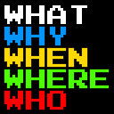

2022年度 1Q 情報リテラシ第一 (新山)
クラス 1a (LAS.I111-01)
- 日時: 月曜日 1-2限 (8:50 - 10:30)
- 場所: オンライン講義。詳細は配信されるメールを参照のこと。
- 講師: 新山 祐介 (しんやま ゆうすけ)
- Teaching Assistant (TA):
- 評価方法: 授業中の質疑、および課題提出により評価する。
- 履修者用ページ:
T2SCHOLA: 情報リテラシ第一【1a(IL1)】
講義予定
講義資料および課題は、すべてこのサイト上で公開する。
講義の録画は T2SCHOLA にて閲覧可能。
- 第1回 (2022年4月11日)
ガイダンス
宿題: ポータルサイトに使うための強力なパスワードを考えてくる。
- 第2回 (2022年4月18日)
グループ自己紹介、コンピュータの原理、情報量の単位
小課題1. 文章入力の練習 (4月25日締切)
- 第3回 (2022年4月25日)
インターネットのしくみ、電子メールの使い方
小課題2. 電子メール送信の練習 (5月2日締切)
クラス共通課題1. 電子メールの仕組み (5月2日締切)
- 第4回 (2022年5月2日)
附属図書館スタッフの方による図書館の使い方
(注意: この回だけは Zoom リンクが異なります。リンクは後日メールで送信します。)
- 第5回 (2022年5月9日)
学術情報へのアクセス、著作権について
小課題3. Wikipediaのウソをさがせ! (5月16日締切)
- 2022年5月16日 - 木曜日の授業をおこなう。
- 第6回 (2022年5月23日)
情報の圧縮とは何か? インターネットのしくみ詳細
小課題4. 「クッキー」の画面写真提出 (5月30日締切)
クラス共通課題2. 「インターネットとウェブ」 (5月30日締切)
- 第7回 (2022年5月30日)
情報セキュリティと情報リテラシ
小課題5. グラフに騙されないようにする (6月6日締切)
クラス共通課題3. 「情報倫理とセキュリティ」 (6月6日締切)
注意: 予定は都合により多少変化することがあります。
Yusuke Shinyama